Reflecting on my four-year journey toward a Bachelor’s degree, I see a story of growth, resilience, and self-discovery. These years were not defined solely by lectures and exams, but by the experiences that shaped my character, deepened my knowledge, and ignited my passion for technology and innovation.
The Beginning
My journey began shortly after completing my HSC exams, filled with anticipation and uncertainty. The admission test at IIUC took place on 8th January 2020, and after navigating delays caused by the emerging COVID-19 pandemic, I was admitted in June 2020 to the CCE department. Classes began on 1st July 2020, initially conducted online due to health restrictions, presenting a unique and challenging start to university life.
The Academic Journey
My academic experience can be divided into two phases: online learning and on-campus engagement. Both phases offered distinct lessons, shaping my adaptability and commitment to excellence.
Online Classes
Online learning demanded self-discipline and time management. The absence of face-to-face interactions with professors and peers required me to proactively seek guidance and participate in virtual discussions. Despite these challenges, I remained committed to learning, completing rigorous open-book exams, and cultivating independent study habits.
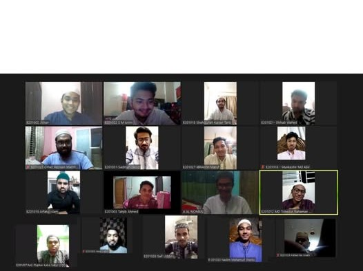
A glimpse of the online orientation session that marked the beginning of my virtual learning experience.
Offline Classes
Returning to campus in March 2022 marked a transformative phase. Physical classes allowed for deeper engagement, collaboration, and exploration beyond academics. Participating in group projects, workshops, and departmental activities strengthened my skills, confidence, and connections within the university community.
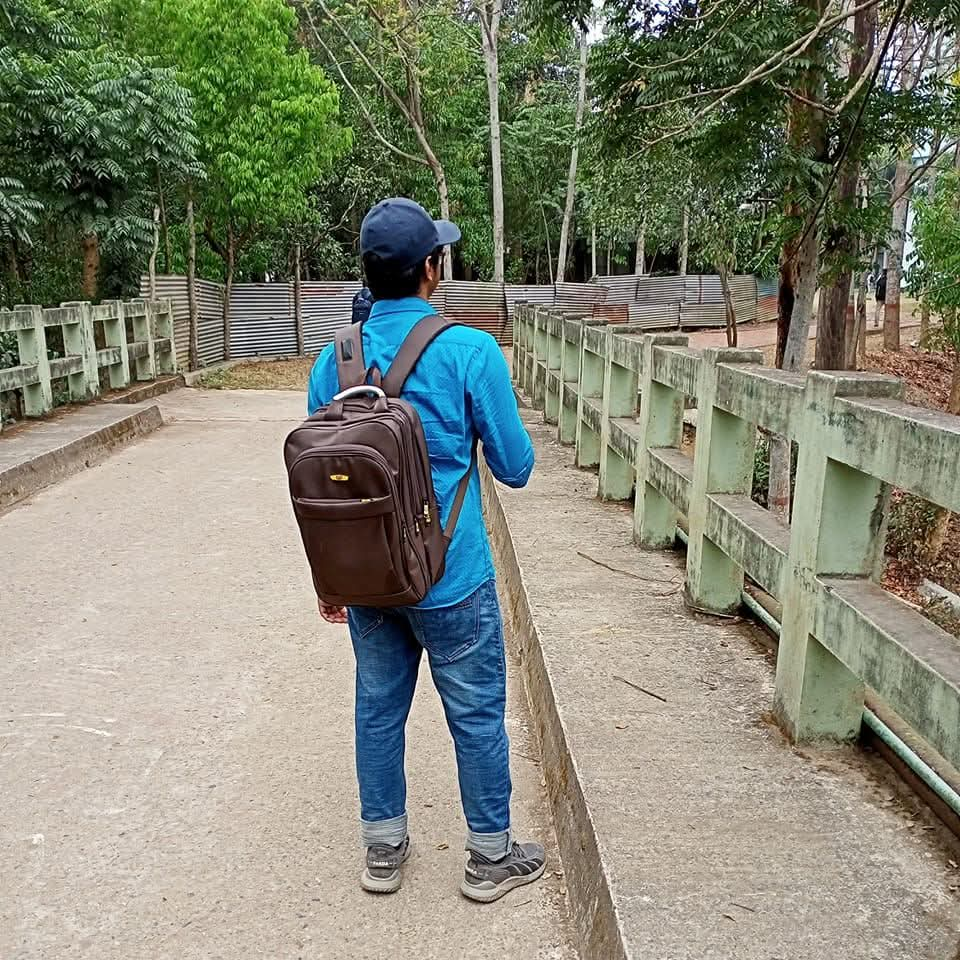
The first day back on campus for offline classes, March 27, 2022.
Commuting to University
Daily commutes were challenging due to distance and traffic, but my dedication to learning never wavered. Using university bus services and careful time management, I consistently attended classes, ensuring that my academic performance and involvement in campus activities remained strong.
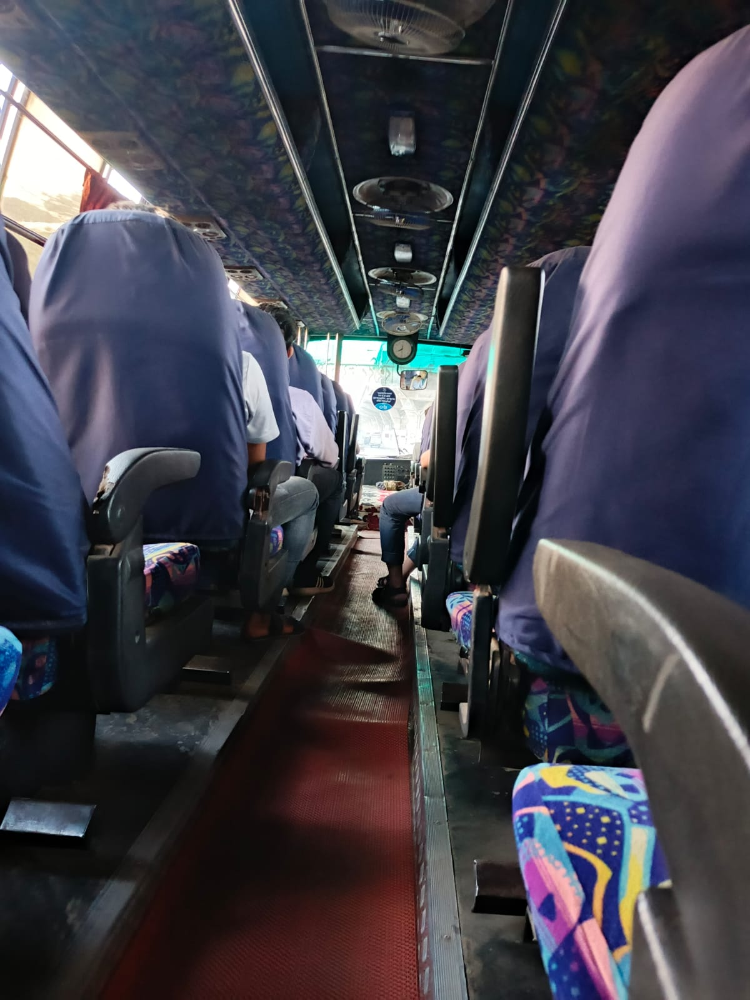
Traveling to and from the university became part of my learning routine.
Academic Challenges and Favorite Subjects
Throughout these years, I encountered academic challenges that tested my perseverance. Courses like Electromagnetic Field (EMF) demanded rigorous study, while programming and Satellite Communication inspired me to explore practical applications and innovation. These experiences refined my problem-solving skills and solidified my interest in technology and game development.
Making Notes
I consistently prepared detailed notes for every course, which became an invaluable resource for exam preparation. These notes, accessible in my portfolio’s Academic Things section, reflect my commitment to excellence and my willingness to support fellow students.
Extracurricular Activities
CCE Programming Contest
Participating in team-based programming contests enhanced my problem-solving and collaborative skills. Our team, int sat[3], ranked fourth among fourteen teams, demonstrating perseverance and technical competence under time constraints.
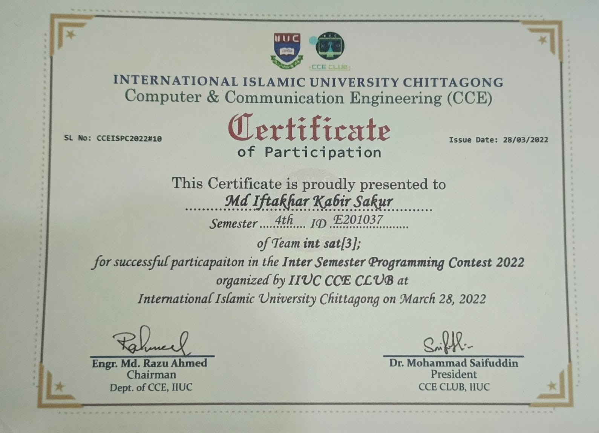
Certificate of participation in the CCE Programming Contest 2022.
CCE Fest
I contributed actively to organizing CCE Fest 2022, overseeing events such as contests, performances, and interactive activities. Engaging in such initiatives honed my leadership, event management, and teamwork skills while creating memorable experiences with my peers.
Group photo during CCE Fest 2022.
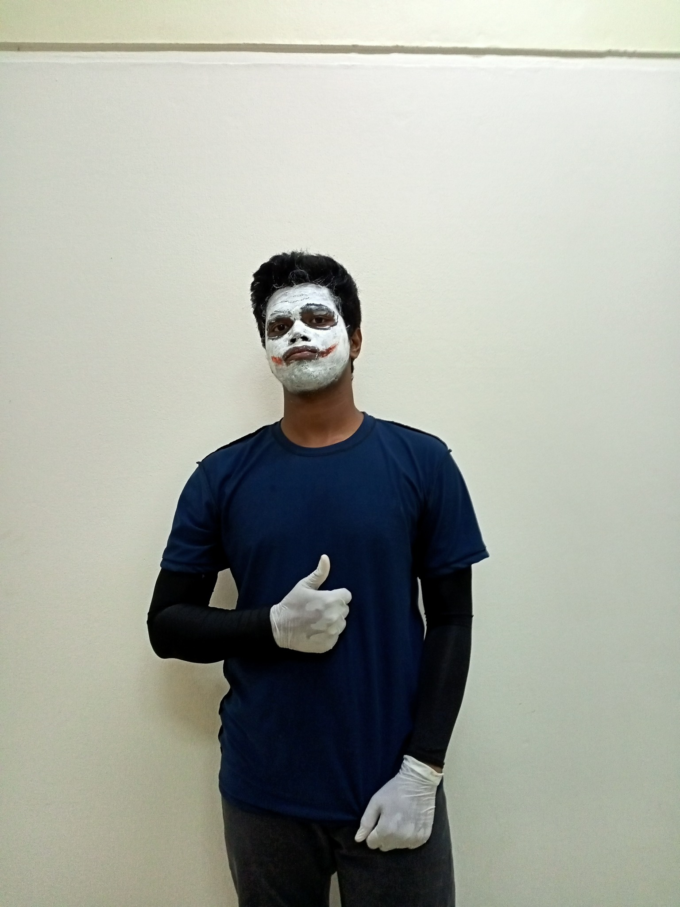
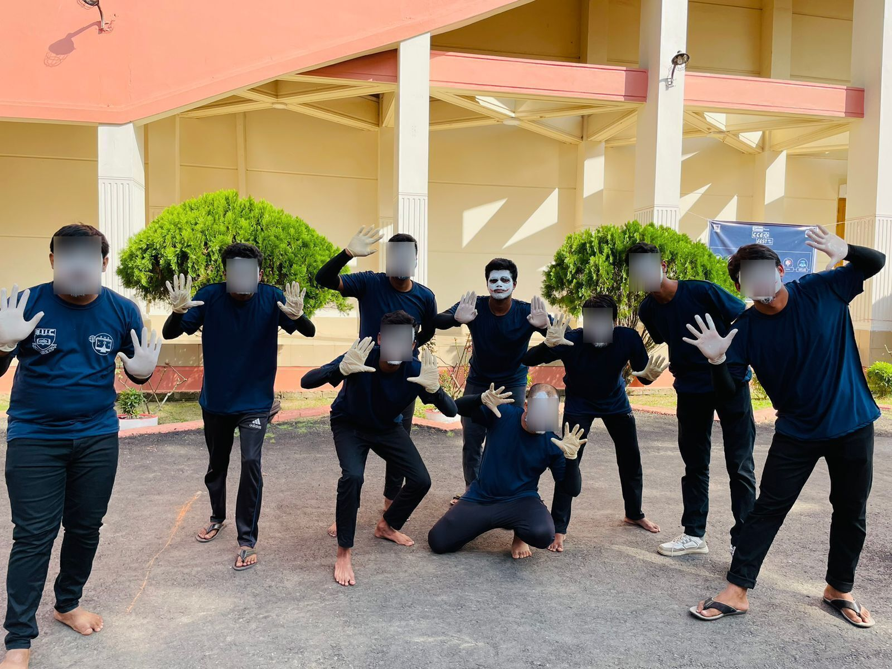
Capturing moments from the CCE Fest 2022 mime performance.
BYLCx Career Training
I attended a three-month BYLCx career development program, learning resume building, interview preparation, networking, and personal branding. Our team won the final presentation competition, reinforcing my leadership and professional development skills.
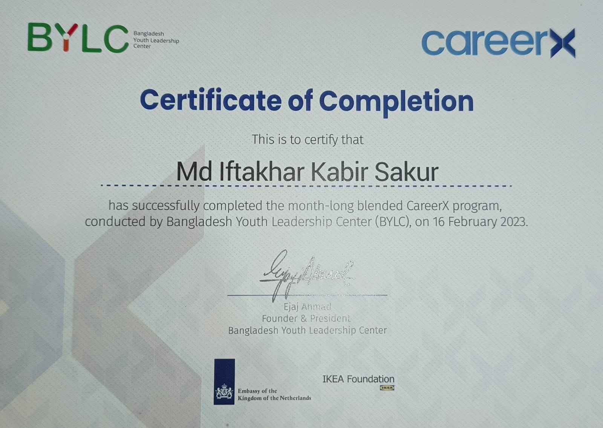
Certificate of completion from BYLCx career training program.
Study Tour
The study tour to Saint Martin Island offered both educational and personal growth opportunities. Engaging with professors and peers in a relaxed setting strengthened bonds and provided invaluable experiences beyond the classroom.
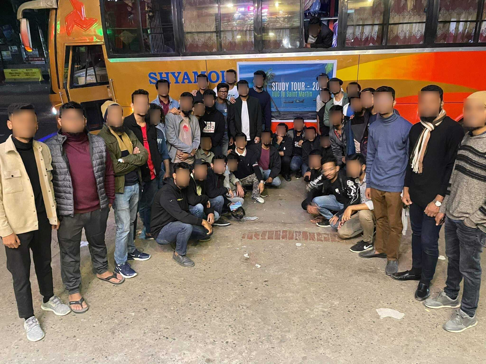
Before the journey to Saint Martin Island.
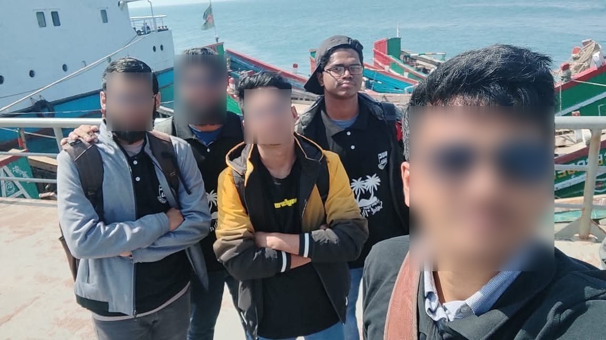
We 5 friends from our batch enjoying the trip to Saint Martin Island.
IIUC Tech Fest
Participating in the IIUC Tech Fest 2023 allowed me to showcase my first Unity game in the Mobile Apps & Game Development competition. This experience provided practical exposure to software development and event participation.

Participating at IIUC Tech Fest 2023.
Roboment Robotics Course
Enrolling in the online Roboment robotics course expanded my practical skills in microcontrollers, sensors, and app-controlled devices. Completing the program strengthened my hands-on knowledge and ability to apply theoretical concepts in projects.
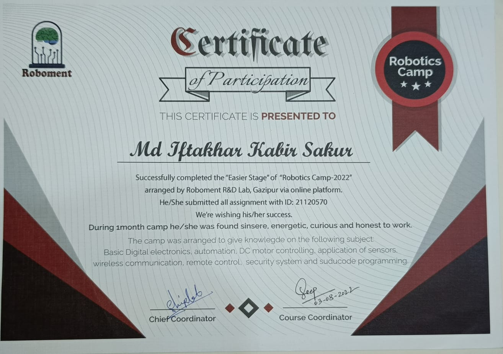
Sports: Football & Cricket
Engaging in football and cricket fostered teamwork, leadership, and physical wellness. Serving as football team captain, I learned to motivate peers and embrace collaboration under competitive settings.
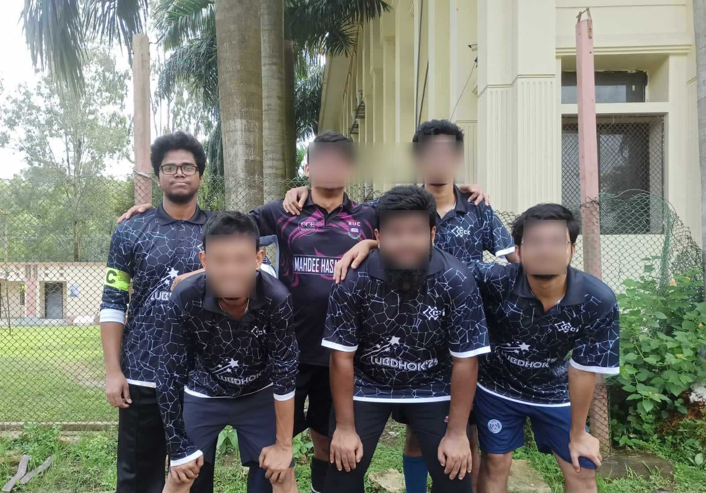
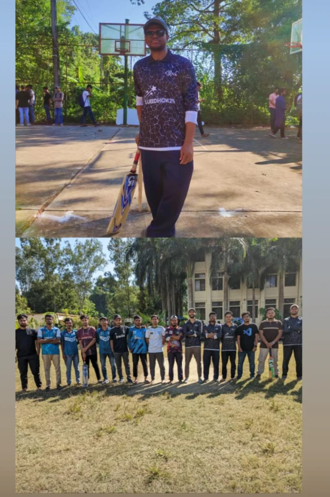
Research and Thesis
Conducting research and completing my thesis was a rigorous and rewarding process. It strengthened my analytical skills, attention to detail, and ability to independently pursue complex projects.
Teaching Assistant
Serving as a Teaching Assistant for a programming course enhanced my leadership, communication, and mentoring skills. Guiding students through labs and assignments reinforced my expertise and contributed to my professional growth.
Memories & Fun Moments
Beyond academics, the moments shared with friends and peers were invaluable. Capturing these experiences through photos and videos allowed me to cherish them and reflect on the friendships that defined my university life.
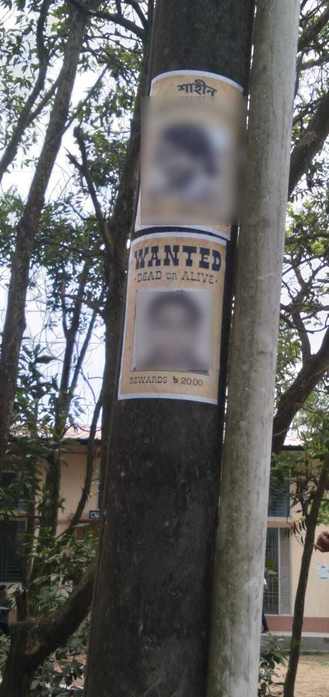
A playful prank during offline classes, creating memorable laughter and camaraderie.

Joined in a social media trend to capture a group photo with everyone.
Industrial Tour and Final Reflections
Visiting W3 Eden Inc. during our industrial tour provided valuable exposure to professional practices, including discussions with the CEO. Reflecting on these experiences alongside my peers at the final batch tour emphasized the culmination of years of learning, growth, and collaboration.


My Bachelor’s journey has been transformative, blending academic rigor, practical experiences, and meaningful relationships. These four years have shaped my skills, character, and aspirations, laying the foundation for future endeavors.
I graduate with confidence, resilience, and a sense of purpose, ready to embrace new challenges and opportunities in both my professional and personal life.← Back to Blog